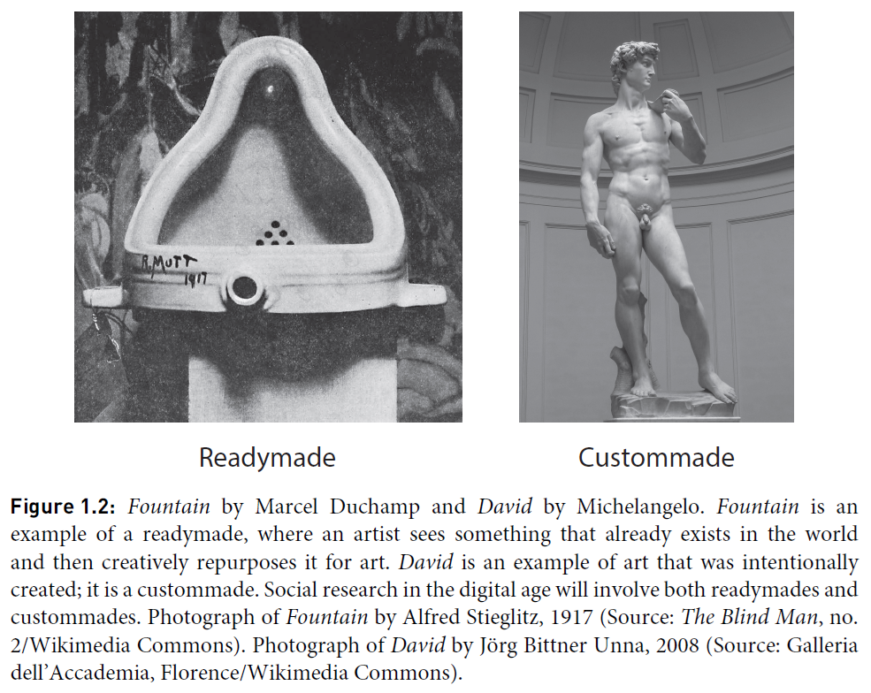

Sesión II: Diseño de investigación en la era digital
Un diseño de investigación es un plan o estrategia concebida para obtener la información que se desea con el fin de responder al problema de investigación.
En simple: Es el mapa que guía al investigador desde la pregunta inicial hasta las conclusiones.
Componentes clave:
| Tipo de Diseño | Propósito Principal | Ejemplo Clásico en Sociología |
|---|---|---|
| Exploratorio | Examinar un tema o problema poco estudiado | Entrevistas a líderes de un nuevo movimiento social. |
| Descriptivo | Especificar propiedades y características de un fenómeno. | Caracterizar la composición socioeconómica de los barrios |
| Correlacional | Asociar variables o conceptos. | Analizar la relación entre nivel educativo e ingresos |
| Explicativo | Determinar los factores asociados a un variables | Determinar por qué ciertos grupos votan más que otros |
| Experimental | Establecer relaciones causales (causa-efecto). | Asignar aleatoriamente un programa social a un grupo. |
La era digital no solo nos da más datos, sino que nos ofrece tipos de datos fundamentalmente diferentes. Esto nos obliga a repensar cómo diseñamos nuestras investigaciones.
“La era digital está en todas partes, ha cambiado la forma en que vivimos y, por lo tanto, debería cambiar la forma en que investigamos”. — Matthew Salganik en “Bit by Bit”
Salganik distingue entre dos tipos de fuentes de datos que ahora tenemos a nuestra disposición:

En la investigación tradicional, nos esforzamos por obtener una muestra representativa de una población bien definida.
Con Big Data, a menudo tenemos datos de toda la población de una plataforma (N=todos), pero esa población no es representativa de la sociedad.
Pregunta para la clase: ¿Es mejor tener una muestra pequeña pero representativa, o datos masivos pero sesgados?
Con la abundancia de datos de comportamiento, algunos proclamaron “el fin de la teoría” y de las encuestas.
Error: Los datos de comportamiento nos dicen QUÉ hacen las personas, pero no POR QUÉ lo hacen.
Solución: Combinar datos. Usar la escala de los datos masivos y la profundidad de las encuestas. - Ejemplo: Identificar patrones de movilidad urbana con datos de celulares (Big Data) y luego encuestar a una muestra de personas para entender las razones de sus desplazamientos (propósito del viaje, satisfacción, etc.).
El acceso a nuevos datos nos permite hacer preguntas que antes eran imposibles de responder.
La granularidad de los datos digitales permite conectar fenómenos a diferentes escalas.
Las CSCC son un campo eminentemente aplicado. El diseño de nuestra investigación debe estar orientado a proponer iniciativas pertinentes a problemas sociales.
Ejemplo:
La clave no es abandonar los métodos tradicionales, sino integrarlos de manera creativa.
| Estrategia | Descripción |
|---|---|
| Enriquecer encuestas | Vincular respuestas de encuestas con datos de comportamiento digital (con consentimiento). |
| Muestreo inteligente | Usar Big Data para identificar subpoblaciones de interés y luego encuestarlas. |
| Experimentos de campo digitales | Realizar experimentos a gran escala dentro de plataformas digitales (ej. A/B testing). |
Un proyecto de CSCC a menudo sigue un ciclo iterativo:
Tema: La crisis de accesibilidad y la ciencia abierta.